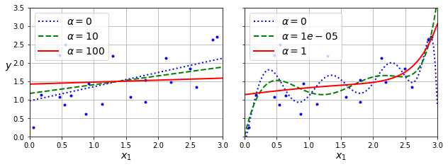
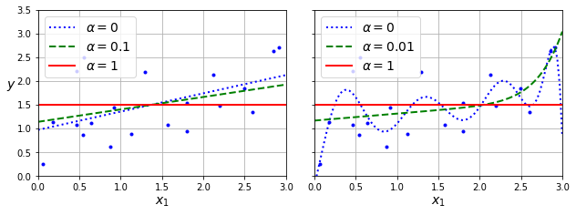
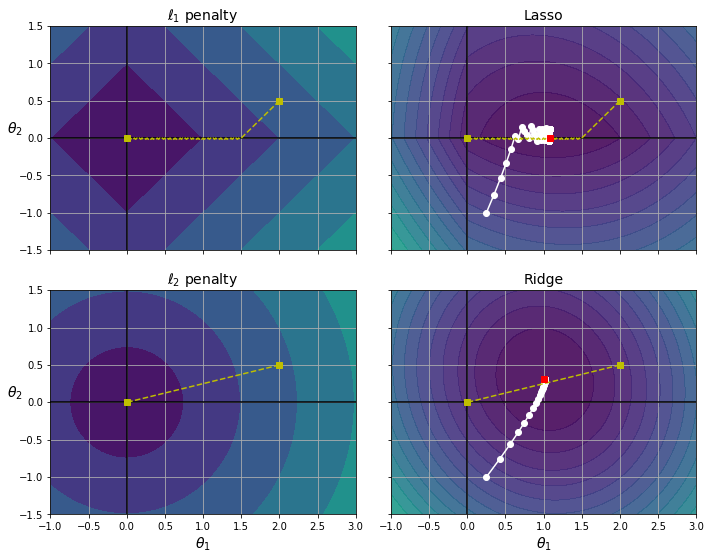
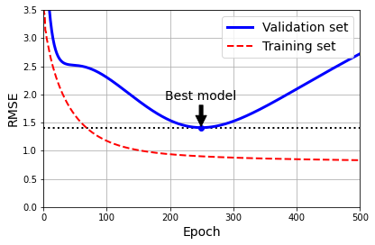

Section 2 — Training Linear Models & Support Vector Machines
Κανόνας πηγών: Το παρόν υλικό είναι απλή ελληνική επεξήγηση μόνο των ανεβασμένων αρχείων DAMA61 ΟΣΣ2, Géron Chapter 4/5, δύο notebooks και δύο απομαγνητοφωνήσεων. Οι τίτλοι και η ομαδοποίηση αποτελούν διδακτική ταξινόμηση της ίδιας ύλης. Δεν προστίθεται νέα θεωρία, νέο dataset ή πρωτότυπη άσκηση.
Ανάγνωση παραπομπών: Η «σελίδα PDF» είναι η θέση στο πραγματικό ανεβασμένο αρχείο. Το «κελί» στο .ipynb αριθμείται από 0, όπως βρίσκεται αποθηκευμένο στη σειρά cells. Οι απομαγνητοφωνήσεις δεν περιλαμβάνουν timestamps και τεκμηριώνονται με γραμμές.
Κώδικας: Παραθέτουμε μόνο πραγματικά αποσπάσματα notebook και εξηγούμε τη σύνδεσή τους με τα προηγούμενα κελιά. Δεν ισχυριζόμαστε νέα εκτέλεση. NOT EXECUTED (νέα εκτέλεση). Αποθηκευμένα outputs του πρωτοτύπου αναγνωρίζονται ρητά ως τέτοια.
Part 4 — Κανονικοποίηση και έλεγχος της εκπαίδευσης
Μάθημα 09 — Ridge Regression: κανονικοποίηση L2
Προαπαιτούμενα από την υπάρχουσα ύλη: Μαθήματα 03 και 08.
Από την πηγή — τι διδάσκεται
Η Ridge Regression είναι μια τεχνική regularization, δηλαδή κανονικοποίησης για τον περιορισμό της πολυπλοκότητας του μοντέλου. Η ΟΣΣ2 παρουσιάζει μια τετραγωνική ποινή πάνω στα βάρη, που προστίθεται στο σφάλμα των προβλέψεων. Η παράμετρος λ της διάλεξης ή alpha της Scikit-Learn ελέγχει πόσο σημαντική είναι η ποινή. Η ιδέα είναι να μη ζητάμε μόνο καλή προσαρμογή στα δεδομένα εκπαίδευσης, αλλά και πιο περιορισμένα βάρη.
Η ΟΣΣ2 δείχνει επίσης έναν κλειστό τύπο της λύσης Ridge χρησιμοποιώντας πίνακες και τον μοναδιαίο πίνακα Ι. Όπως και στη Normal Equation, η λύση προκύπτει θέτοντας τη σχετική παράγωγο του σφάλματος ίση με μηδέν. Το βιβλίο επισημαίνει ότι συνήθως ο σταθερός όρος δεν κανονικοποιείται όπως τα συνηθισμένα βάρη.
Οπτική εξήγηση — πραγματικά σχήματα της πηγής

Αυθεντικό αποθηκευμένο διάγραμμα: 04_training_linear_models(1).ipynb — κελί 58 (αρίθμηση από το 0). Αναπαράγεται από το υπάρχον output του notebook· NOT EXECUTED εδώ.
Πώς να το διαβάσεις: Παρατήρησε πώς οι γραμμές αλλάζουν όταν αυξάνεται το α. Η Ridge κρατά τους συντελεστές υπό περιορισμό· το σχήμα δεν λέει ότι οι συντελεστές μηδενίζονται.
Απλή επεξήγηση της ίδιας έννοιας
Σκέψου χωριστά τα δύο τμήματα του τύπου της πηγής. Το πρώτο μετρά το πόσο απέχουν οι προβλέψεις από τις σωστές τιμές. Το δεύτερο προσθέτει κόστος όταν οι συντελεστές αποκτούν μεγάλο μέγεθος. Δεν αντικαθιστούμε τον στόχο της πρόβλεψης· προσθέτουμε έναν περιορισμό στη διαδικασία εκπαίδευσης.
Η Ridge είναι ευαίσθητη στις κλίμακες των χαρακτηριστικών. Ο Géron συνιστά κλιμάκωση πριν την εφαρμογή της. Το notebook παρουσιάζει διαφορετικές τιμές alpha και συγκρίνει τις καμπύλες, καθώς και κώδικα με Ridge, SGDRegressor και τον άμεσο τύπο.
Καθοδηγούμενη εξήγηση — ακολουθούμε αργά την ίδια πηγή
Η Ridge κρατά τον στόχο της γραμμικής ή πολυωνυμικής παλινδρόμησης, αλλά στο κριτήριο εκπαίδευσης προσθέτει ποινή για μεγάλα βάρη. Διάβασε τον τύπο της ΟΣΣ2 χωρίζοντάς τον σε δύο μέρη. Πρώτα βρίσκεται το σφάλμα από τις προβλέψεις. Έπειτα υπάρχει το λάμδα δια δύο επί το άθροισμα των τετραγώνων των βαρών. Το λάμδα ρυθμίζει πόσο ισχυρά συμμετέχει αυτή η ποινή.
Η διαφάνεια 18 προχωρά σε μια κανονική μαθηματική πράξη: θέτει την παράγωγο του συνολικού κριτηρίου ίση με μηδέν και δίνει την τελική λύση με τον πίνακα φι ανάστροφο επί φι, στον οποίο προστίθεται λάμδα επί μοναδιαίο πίνακα. Ο μοναδιαίος πίνακας εδώ είναι μέρος του συγκεκριμένου τύπου, όχι καινούριο dataset.
Στο notebook η Ridge χρησιμοποιείται με το alpha, δηλαδή τη ρύθμιση κανονικοποίησης στην υλοποίηση της πηγής. Με alpha=0.1 η ήδη αποθηκευμένη πρόβλεψη για 1.5 είναι περίπου 1.55325833. Το αποτέλεσμα αυτό δεν είναι γενικός κανόνας για κάθε Ridge· ανήκει στα συγκεκριμένα δεδομένα.
Οι τύποι της πηγής και τι σημαίνουν
Προφορική ανάγνωση και επεξήγηση: Το συνολικό κόστος είναι το μισό της τετραγωνικής απόκλισης προβλέψεων και στόχων, συν το λάμδα δια δύο επί το τετράγωνο του μεγέθους των βαρών. Στον δεύτερο τύπο, ο πίνακας φι ανάστροφο επί φι ενισχύεται με λάμδα επί τον μοναδιαίο πίνακα, πριν υπολογιστεί η λύση.
Αριθμητικό παράδειγμα ή εφαρμογή — αποκλειστικά από την πηγή
Πραγματικό notebook: Στο κελί 55 δημιουργούνται 20 θορυβώδη γραμμικά δείγματα από y = 1 + 0.5 * X + noise. Στο κελί 57 το Ridge(alpha=0.1, solver="cholesky") προβλέπει για x=1.5 περίπου 1.55325833 στο αποθηκευμένο output.
Βασική Python από το πραγματικό notebook
Πριν από τον κώδικα: Η διαδικασία και η σειρά των εντολών έχουν οριστεί από τα συγκεκριμένα κελιά του δοσμένου notebook. Δεν δημιουργούμε νέα υλοποίηση.
Ακριβές απόσπασμα του παρεχόμενου 04_training_linear_models(1).ipynb, κελί 55 (αρίθμηση από 0):
# extra code – we've done this type of generation several times before
np.random.seed(42)
m = 20
X = 3 * np.random.rand(m, 1)
y = 1 + 0.5 * X + np.random.randn(m, 1) / 1.5
X_new = np.linspace(0, 3, 100).reshape(100, 1)Ακριβές απόσπασμα του παρεχόμενου 04_training_linear_models(1).ipynb, κελί 57 (αρίθμηση από 0):
from sklearn.linear_model import Ridge
ridge_reg = Ridge(alpha=0.1, solver="cholesky")
ridge_reg.fit(X, y)
ridge_reg.predict([[1.5]])Επεξήγηση των πραγματικών βημάτων: Κελί 55: ορίζει την τυχαία δημιουργία του συγκεκριμένου dataset και τις πιθανές νέες εισόδους. Κελί 57: εισάγει Ridge, δημιουργεί μοντέλο με alpha 0.1, καλεί fit(X,y) και στη συνέχεια predict([[1.5]]). Δεν άλλαξαν τιμές σε σχέση με την πηγή.
Εκτέλεση: NOT EXECUTED εδώ· οποιαδήποτε αριθμητική έξοδος παραπάνω είναι αποθηκευμένη στο πρωτότυπο notebook.
Από τη συνάρτηση κόστους στον τύπο Ridge της ΟΣΣ2
Η διαφάνεια 18 ξεκινά από το άθροισμα της τετραγωνικής απόκλισης και της ποινής L2. Η γραφή είναι το διάνυσμα των διαφορών πρόβλεψης και στόχου, ενώ είναι το άθροισμα των τετραγώνων των διαφορών του. Η πηγή θέτει την παράγωγο ως προς τα βάρη ίση με μηδέν και γράφει:
Συγκεντρώνει τους όρους που περιέχουν και προκύπτει ο τύπος:
Το είναι ο μοναδιαίος πίνακας του τύπου. Η πηγή παρουσιάζει τη σχέση σε αυτή την κανονικοποιημένη μορφή· δεν προσθέτουμε εξωτερική απόδειξη ή αριθμητικό σύνολο δεδομένων. Πηγή: ΟΣΣ2, σελ. 17–18.
Διαβάζουμε τον πραγματικό κώδικα γραμμή προς γραμμή
Οι παρακάτω παρατηρήσεις εξηγούν μόνο τις εντολές που υπάρχουν ήδη στα παρατιθέμενα αποσπάσματα. Δεν αποτελούν νέο πρόγραμμα. Για την ακριβή προέλευση κάθε block χρησιμοποιούμε τις ήδη σημειωμένες παραπομπές notebook/κελιού του μαθήματος. Νέα εκτέλεση: NOT EXECUTED.
Απόσπασμα 1, στη σειρά της πηγής: - # extra code – we've done this type of generation several times before — Σχόλιο που υπάρχει στον πρωτότυπο κώδικα και εξηγεί το συγκεκριμένο βήμα. - np.random.seed(42) — Ορίζει τη σταθερή αρχική κατάσταση τυχαιότητας για αναπαραγωγιμότητα του συγκεκριμένου παραδείγματος. - m = 20 — Καταγράφει το πλήθος των δειγμάτων που θα χρησιμοποιηθούν στους υπολογισμούς. - X = 3 * np.random.rand(m, 1) — Δημιουργεί τις συγκεκριμένες τυχαίες τιμές εισόδου ακριβώς όπως τις ορίζει η πηγή. - y = 1 + 0.5 * X + np.random.randn(m, 1) / 1.5 — Ορίζει τις πραγματικές εξόδους αυτού του παραδείγματος από την υπάρχουσα σχέση, μαζί με τον θόρυβο της πηγής. - X_new = np.linspace(0, 3, 100).reshape(100, 1) — Δημιουργεί τις αριθμητικές θέσεις που χρησιμοποιεί το βιβλίο για την προβολή του μοντέλου. Απόσπασμα 2, στη σειρά της πηγής: - from sklearn.linear_model import Ridge — Φέρνει στον κώδικα τη βιβλιοθήκη, τη συνάρτηση ή την κλάση που χρησιμοποιείται ήδη σε αυτό το δοσμένο παράδειγμα. - ridge_reg = Ridge(alpha=0.1, solver="cholesky") — Δημιουργεί μοντέλο Ridge με την ποινή L2 και την παράμετρο alpha που δηλώνεται εδώ. - ridge_reg.fit(X, y) — Εκπαιδεύει το ήδη ορισμένο μοντέλο στα συγκεκριμένα χαρακτηριστικά και τις γνωστές εξόδους. - ridge_reg.predict([[1.5]]) — Ζητά πρόβλεψη από το ήδη εκπαιδευμένο μοντέλο για τις τιμές εισόδου του βιβλίου.
Περιορισμοί και προσοχή
Το ότι ένα συγκεκριμένο alpha λειτούργησε στο παράδειγμα δεν σημαίνει ότι είναι πάντα σωστό. Χρειάζεται προσοχή στην κλιμάκωση και στον χειρισμό του σταθερού όρου.
Τι κρατώ από το υπάρχον μάθημα
Ridge = SSE/MSE με πρόσθετη ποινή L2· μεγάλες τιμές regularization περιορίζουν τα βάρη.
Μάθημα 10 — LASSO: κανονικοποίηση L1 και μηδενισμός βαρών
Προαπαιτούμενα από την υπάρχουσα ύλη: Μάθημα 09.
Από την πηγή — τι διδάσκεται
Η LASSO είναι η δεύτερη βασική τεχνική κανονικοποίησης του υλικού. Το όνομά της αναλύεται από την ΟΣΣ2 ως Least Absolute Shrinkage and Selection Operator. Σε αντίθεση με την τετραγωνική ποινή της Ridge, η LASSO τιμωρεί το άθροισμα των απόλυτων τιμών των βαρών: αυτή είναι η ποινή L1.
Το βιβλίο δείχνει στα σχήματα 4-18 και 4-19 ότι η LASSO μπορεί να οδηγήσει ορισμένα βάρη ακριβώς στο μηδέν. Έτσι το μοντέλο μπορεί να καταλήξει με λιγότερους ενεργούς συντελεστές. Η πηγή συσχετίζει αυτή τη συμπεριφορά με feature selection, επιλογή χαρακτηριστικών. Όπως και στη Ridge, το alpha ελέγχει την ισχύ της κανονικοποίησης.
Οπτική εξήγηση — πραγματικά σχήματα της πηγής

Αυθεντικό αποθηκευμένο διάγραμμα: 04_training_linear_models(1).ipynb — κελί 65 (αρίθμηση από το 0). Αναπαράγεται από το υπάρχον output του notebook· NOT EXECUTED εδώ.
Πώς να το διαβάσεις: Κάθε καμπύλη αντιστοιχεί σε τιμή α της πηγής. Το γράφημα συνδυάζεται με τον ορισμό της ποινής L1, η οποία μπορεί να κάνει ορισμένα βάρη ακριβώς μηδέν.
Απλή επεξήγηση της ίδιας έννοιας
Η απόλυτη τιμή διατηρεί ένα θετικό μέγεθος ποινής ανεξάρτητα από το πρόσημο του βάρους. Στη γεωμετρική ερμηνεία του βιβλίου, η ποινή L1 συχνά ευνοεί λύσεις σε άξονες, όπου κάποιο βάρος γίνεται μηδέν. Αυτό δεν σημαίνει ότι όλες οι περιπτώσεις πρέπει να έχουν μηδενικούς συντελεστές, αλλά είναι μια χαρακτηριστική δυνατότητα της μεθόδου.
Προσοχή σε μια διατύπωση της απομαγνητοφώνησης: το κρίσιμο μαθηματικό ζήτημα στο μηδέν είναι η έλλειψη παραγωγισιμότητας της απόλυτης τιμής, όχι το ότι η συνάρτηση είναι ασυνεχής. Για την εκπαίδευση χρησιμοποιούμε τη σαφή γραπτή εξήγηση του Géron.
Καθοδηγούμενη εξήγηση — ακολουθούμε αργά την ίδια πηγή
Το LASSO αντιμετωπίζει το ίδιο ζήτημα ελέγχου των βαρών, αλλά η ποινή αλλάζει μορφή. Αντί να προσθέσουμε τα τετράγωνά τους όπως στη Ridge, προσθέτουμε τις απόλυτες τιμές τους. Γι’ αυτό η ΟΣΣ2 ονομάζει αυτή την ποινή L1. Η απόλυτη τιμή δεν κρατά το πρόσημο ενός βάρους: μετρά το μέγεθός του.
Το βιβλίο δείχνει ως βασική ιδιότητα ότι η LASSO μπορεί να οδηγήσει ορισμένα βάρη ακριβώς στο μηδέν. Όταν διαβάζεις τη λέξη selection στο όνομα της μεθόδου, τη συνδέεις με αυτή τη συμπεριφορά. Δεν ισχυριζόμαστε ότι κάθε παράμετρος θα μηδενιστεί ή ότι η μέθοδος υπερέχει πάντοτε.
Στο αυθεντικό notebook χρησιμοποιείται Lasso(alpha=0.1) και προβλέπεται η τιμή για την ίδια ήδη δοσμένη είσοδο 1.5. Η αποθηκευμένη έξοδος είναι περίπου 1.53788174. Η αριθμητική διαφορά από τη Ridge προκύπτει από τα συγκεκριμένα μοντέλα και δεδομένα του βιβλίου.
Οι τύποι της πηγής και τι σημαίνουν
Προφορική ανάγνωση και επεξήγηση: Η νόρμα έλ ένα είναι το άθροισμα των απόλυτων τιμών των βαρών. Το συνολικό σφάλμα είναι η τετραγωνική απόκλιση των προβλέψεων και ένα πρόσθετο λάμδα επί τη νόρμα έλ ένα.
Αριθμητικό παράδειγμα ή εφαρμογή — αποκλειστικά από την πηγή
Πραγματικό notebook: Lasso(alpha=0.1) εκπαιδεύεται στα ίδια μικρά γραμμικά δεδομένα και για είσοδο 1.5 έχει αποθηκευμένη πρόβλεψη περίπου 1.53788174. Στο κελί 65 συγκρίνονται διαφορετικές τιμές alpha.
Βασική Python από το πραγματικό notebook
Πριν από τον κώδικα: Η διαδικασία και η σειρά των εντολών έχουν οριστεί από τα συγκεκριμένα κελιά του δοσμένου notebook. Δεν δημιουργούμε νέα υλοποίηση.
Ακριβές απόσπασμα του παρεχόμενου 04_training_linear_models(1).ipynb, κελί 64 (αρίθμηση από 0):
from sklearn.linear_model import Lasso
lasso_reg = Lasso(alpha=0.1)
lasso_reg.fit(X, y)
lasso_reg.predict([[1.5]])Επεξήγηση των πραγματικών βημάτων: Το κελί 64 εισάγει Lasso από sklearn.linear_model, δημιουργεί lasso_reg = Lasso(alpha=0.1), καλεί fit(X,y) και predict([[1.5]]). Τα δεδομένα είναι αυτά του προηγούμενου παραδείγματος Ridge. Η γλώσσα και οι εντολές είναι αυτούσιες της πηγής.
Εκτέλεση: NOT EXECUTED εδώ· οποιαδήποτε αριθμητική έξοδος παραπάνω είναι αποθηκευμένη στο πρωτότυπο notebook.
Διαβάζουμε τον πραγματικό κώδικα γραμμή προς γραμμή
Οι παρακάτω παρατηρήσεις εξηγούν μόνο τις εντολές που υπάρχουν ήδη στα παρατιθέμενα αποσπάσματα. Δεν αποτελούν νέο πρόγραμμα. Για την ακριβή προέλευση κάθε block χρησιμοποιούμε τις ήδη σημειωμένες παραπομπές notebook/κελιού του μαθήματος. Νέα εκτέλεση: NOT EXECUTED.
Απόσπασμα 1, στη σειρά της πηγής: - from sklearn.linear_model import Lasso — Φέρνει στον κώδικα τη βιβλιοθήκη, τη συνάρτηση ή την κλάση που χρησιμοποιείται ήδη σε αυτό το δοσμένο παράδειγμα. - lasso_reg = Lasso(alpha=0.1) — Δημιουργεί μοντέλο LASSO με την ποινή L1 και την παράμετρο alpha της πηγής. - lasso_reg.fit(X, y) — Εκπαιδεύει το ήδη ορισμένο μοντέλο στα συγκεκριμένα χαρακτηριστικά και τις γνωστές εξόδους. - lasso_reg.predict([[1.5]]) — Ζητά πρόβλεψη από το ήδη εκπαιδευμένο μοντέλο για τις τιμές εισόδου του βιβλίου.
Περιορισμοί και προσοχή
Το βιβλίο αναφέρει ότι σε ισχυρά συσχετισμένα χαρακτηριστικά η LASSO μπορεί να συμπεριφέρεται λιγότερο σταθερά από την Elastic Net. Δεν αντικαθιστούμε αυτήν τη γενική παρατήρηση με νέο παράδειγμα.
Τι κρατώ από το υπάρχον μάθημα
Ridge = άθροισμα τετραγώνων· LASSO = άθροισμα απολύτων· LASSO μπορεί να μηδενίζει βάρη.
Μάθημα 11 — Elastic Net: συνδυασμός Ridge και LASSO
Προαπαιτούμενα από την υπάρχουσα ύλη: Μαθήματα 09–10.
Από την πηγή — τι διδάσκεται
Η Elastic Net αποτελεί συνδυασμό L1 και L2. Το βιβλίο την παρουσιάζει ως ενδιάμεση προσέγγιση ανάμεσα στη Ridge και στη LASSO. Χρησιμοποιεί μια παράμετρο r που προσδιορίζει την κατανομή της ποινής ανάμεσα στα δύο είδη regularization. Στη Scikit-Learn η σχετική παράμετρος ονομάζεται l1_ratio.
Το βιβλίο εξηγεί ότι όταν η σχέση δίνει όλο το βάρος στην L1, παίρνουμε συμπεριφορά LASSO, ενώ όταν το βάρος L1 είναι μηδέν έχουμε την αντίστοιχη μορφή της Ridge. Η Elastic Net παρουσιάζεται ως συχνά προτιμητέα από τη LASSO όταν υπάρχουν έντονες συσχετίσεις μεταξύ χαρακτηριστικών.
Οπτική εξήγηση — πραγματικά σχήματα της πηγής

Αυθεντικό αποθηκευμένο διάγραμμα: 04_training_linear_models(1).ipynb — κελί 66 (αρίθμηση από το 0). Αναπαράγεται από το υπάρχον output του notebook· NOT EXECUTED εδώ.
Πώς να το διαβάσεις: Σύγκρινε τις περιοχές LASSO και Ridge στο ίδιο σχήμα του βιβλίου: η διαφορετική μορφή της ποινής επηρεάζει τη λύση. Το Elastic Net συνδυάζει τις ίδιες δύο ποινές, χωρίς το σχήμα να παρουσιάζει ξεχωριστή νέα εκτέλεση Elastic Net.
Απλή επεξήγηση της ίδιας έννοιας
Η βασική εικόνα είναι απλή: στο ίδιο μοντέλο μπορούμε να ζητούμε και μικρότερους συντελεστές και τη συμπεριφορά επιλογής συντελεστών που συνδέεται με την L1. Αυτό δεν είναι νέα μέθοδος υπολογισμού χαρακτηριστικών, αλλά αλλαγή της συνάρτησης κόστους κατά την εκπαίδευση. Το alpha ελέγχει συνολικά την ισχύ της κανονικοποίησης και το l1_ratio τη μίξη των δύο ποινών.
Καθοδηγούμενη εξήγηση — ακολουθούμε αργά την ίδια πηγή
Η Elastic Net δεν εισάγει νέα κατηγορία δεδομένων. Συνδυάζει τους δύο τρόπους περιορισμού που μόλις είδαμε: L1 από τη LASSO και L2 από τη Ridge. Στον τύπο του Géron η παράμετρος r καθορίζει το μείγμα. Όταν το r είναι μηδέν μένει η μορφή Ridge και όταν είναι ένα μένει η μορφή LASSO.
Για να διαβάσεις την εξίσωση, κράτα τρία μέρη: σφάλμα πρόβλεψης, όρο L1 και όρο L2. Ο ίδιος συντελεστής που μοιράζεται στους δύο όρους δεν σημαίνει ότι οι ποινές είναι ίδιες· η μία χρησιμοποιεί απόλυτες τιμές, η άλλη τετράγωνα.
Το notebook περιλαμβάνει την τιμή l1_ratio=0.5 στον πραγματικό κώδικα ElasticNet(alpha=0.1, l1_ratio=0.5). Η αποθηκευμένη πρόβλεψη για την υπάρχουσα είσοδο 1.5 είναι περίπου 1.54333232. Αυτή η πληροφορία συμπληρώνει την έννοια του συνδυασμού χωρίς να κατασκευάζουμε δικό μας παράδειγμα.
Οι τύποι της πηγής και τι σημαίνουν
Προφορική ανάγνωση και επεξήγηση: Η πηγή συνδυάζει το μέσο τετραγωνικό σφάλμα με ένα μέρος άλφα επί έλ ένα και ένα μέρος άλφα επί έλ δύο. Το ρο μικρό ή ίσο από ένα καθορίζει το μείγμα των δύο ποινών.
Αριθμητικό παράδειγμα ή εφαρμογή — αποκλειστικά από την πηγή
Πραγματικό notebook: ElasticNet(alpha=0.1, l1_ratio=0.5) εκπαιδεύεται στα ίδια δεδομένα και για x=1.5 έχει αποθηκευμένο αποτέλεσμα περίπου 1.54333232.
Βασική Python από το πραγματικό notebook
Πριν από τον κώδικα: Η διαδικασία και η σειρά των εντολών έχουν οριστεί από τα συγκεκριμένα κελιά του δοσμένου notebook. Δεν δημιουργούμε νέα υλοποίηση.
Ακριβές απόσπασμα του παρεχόμενου 04_training_linear_models(1).ipynb, κελί 68 (αρίθμηση από 0):
from sklearn.linear_model import ElasticNet
elastic_net = ElasticNet(alpha=0.1, l1_ratio=0.5)
elastic_net.fit(X, y)
elastic_net.predict([[1.5]])Επεξήγηση των πραγματικών βημάτων: Στο κελί 68 εισάγεται ElasticNet, δημιουργείται το μοντέλο με alpha=0.1 και l1_ratio=0.5, ακολουθούν fit(X,y) και predict([[1.5]]). Τα δεδομένα επαναχρησιμοποιούνται από την Ridge/LASSO ενότητα.
Εκτέλεση: NOT EXECUTED εδώ· οποιαδήποτε αριθμητική έξοδος παραπάνω είναι αποθηκευμένη στο πρωτότυπο notebook.
Διαβάζουμε τον πραγματικό κώδικα γραμμή προς γραμμή
Οι παρακάτω παρατηρήσεις εξηγούν μόνο τις εντολές που υπάρχουν ήδη στα παρατιθέμενα αποσπάσματα. Δεν αποτελούν νέο πρόγραμμα. Για την ακριβή προέλευση κάθε block χρησιμοποιούμε τις ήδη σημειωμένες παραπομπές notebook/κελιού του μαθήματος. Νέα εκτέλεση: NOT EXECUTED.
Απόσπασμα 1, στη σειρά της πηγής: - from sklearn.linear_model import ElasticNet — Φέρνει στον κώδικα τη βιβλιοθήκη, τη συνάρτηση ή την κλάση που χρησιμοποιείται ήδη σε αυτό το δοσμένο παράδειγμα. - elastic_net = ElasticNet(alpha=0.1, l1_ratio=0.5) — Δημιουργεί μοντέλο Elastic Net με την ποινή και την αναλογία L1/L2 που δηλώνει το notebook. - elastic_net.fit(X, y) — Εκπαιδεύει το ήδη ορισμένο μοντέλο στα συγκεκριμένα χαρακτηριστικά και τις γνωστές εξόδους. - elastic_net.predict([[1.5]]) — Ζητά πρόβλεψη από το ήδη εκπαιδευμένο μοντέλο για τις τιμές εισόδου του βιβλίου.
Πώς διαβάζουμε την υπάρχουσα επιλογή Elastic Net
Στη συγκεκριμένη ενότητα δεν ζητείται να υπολογίσουμε μόνοι μας ένα νέο, άγνωστο σύνολο συντελεστών. Η πηγή συγκρίνει τη λειτουργία των δύο όρων κανονικοποίησης και κατόπιν δείχνει πώς η βιβλιοθήκη τούς χρησιμοποιεί στο δοσμένο μοντέλο. Γι’ αυτό, πριν δούμε την αποθηκευμένη πρόβλεψη, αναγνωρίζουμε τη σειρά: αρχικά ορίζουμε το μοντέλο με παράμετρο ισχύος της κανονικοποίησης και παράμετρο ανάμειξης, μετά εκπαιδεύουμε στα γνωστά χαρακτηριστικά και στους γνωστούς στόχους και στο τέλος ζητάμε την εκτίμηση για την είσοδο του βιβλίου. Η έξοδος είναι αποτέλεσμα αυτού του συγκεκριμένου εκπαιδευμένου μοντέλου, όχι ένας αριθμός που προκύπτει μόνο από την τιμή της αναλογίας L1 και L2. Εφόσον η πηγή δεν παρέχει δεύτερο αριθμητικό παράδειγμα εδώ, δεν επινοούμε ένα για να συμπληρώσουμε τη θεωρία.
Περιορισμοί και προσοχή
Η Elastic Net έχει πρόσθετη υπερπαράμετρο μίξης και η επιλογή της δεν δίνεται από έναν καθολικά σωστό αριθμό.
Τι κρατώ από το υπάρχον μάθημα
Elastic Net = L1 και L2 μαζί· l1_ratio ελέγχει τη μίξη.
Μάθημα 12 — Early Stopping: πότε σταματά η εκπαίδευση
Προαπαιτούμενα από την υπάρχουσα ύλη: Μαθήματα 04, 08–11.
Από την πηγή — τι διδάσκεται
Η Early Stopping είναι μέθοδος κανονικοποίησης που δεν απαιτεί να προσθέσουμε νέο είδος ποινής στους συντελεστές. Παρακολουθούμε το σφάλμα σε σύνολο validation κατά τη διάρκεια διαδοχικών epochs. Η πηγή εξηγεί ότι το validation error συχνά βελτιώνεται μέχρι ένα σημείο και μετά μπορεί να αρχίσει να χειροτερεύει, ακόμη κι όταν το training error συνεχίζει να βελτιώνεται. Τότε είναι χρήσιμο να κρατηθεί η κατάσταση του μοντέλου με την καλύτερη επικύρωση.
Η ΟΣΣ2 περιλαμβάνει την έννοια patience: πόσες συνεχόμενες αποτυχημένες βελτιώσεις της επικύρωσης ανέχεται κανείς πριν σταματήσει. Ο Géron αναφέρει ότι σε SGD και mini-batch οι καμπύλες μπορεί να είναι θορυβώδεις, άρα δεν είναι πάντα σωστό να διακόπτουμε από μία μεμονωμένη αύξηση.
Οπτική εξήγηση — πραγματικά σχήματα της πηγής

Αυθεντικό αποθηκευμένο διάγραμμα: 04_training_linear_models(1).ipynb — κελί 73 (αρίθμηση από το 0). Αναπαράγεται από το υπάρχον output του notebook· NOT EXECUTED εδώ.
Πώς να το διαβάσεις: Το βέλος “Best model” εμφανίζεται στο ελάχιστο validation RMSE. Η μπλε καμπύλη μετά ανεβαίνει παρότι η κόκκινη training καμπύλη συνεχίζει να κατεβαίνει.
Απλή επεξήγηση της ίδιας έννοιας
Η πρακτική διάκριση είναι ανάμεσα στο «μαθαίνω όλο και καλύτερα τα γνωστά δείγματα» και στο «γενικεύω σε δεδομένα που δεν χρησιμοποιήθηκαν για την ενημέρωση των βαρών». Το Early Stopping επιλέγει πότε αξίζει να σταματήσουμε με βάση τη δεύτερη πληροφορία.
Το πραγματικό notebook χρησιμοποιεί πολύ υψηλού βαθμού PolynomialFeatures και SGDRegressor.partial_fit, ώστε η εκπαίδευση να προχωρά epoch προς epoch. Μετρά RMSE στο validation set και κρατά αντίγραφο του καλύτερου μοντέλου με deepcopy όταν βελτιώνεται η τιμή. Αυτή είναι η μέθοδος του παραδείγματος και όχι νέος αυτοσχέδιος αλγόριθμος.
Καθοδηγούμενη εξήγηση — ακολουθούμε αργά την ίδια πηγή
Στο Early Stopping δεν αλλάζουμε τη βασική μαθηματική μορφή του μοντέλου. Παρακολουθούμε την εκπαίδευση και τη σταματάμε όταν η απόδοση στο validation set παύει να βελτιώνεται. Η ΟΣΣ2 παρουσιάζει το validation error και την έννοια patience: πόσες διαδοχικές εποχές χωρίς βελτίωση επιτρέπουμε πριν θεωρήσουμε ότι δεν υπάρχει λόγος να συνεχίζουμε.
Στο συγκεκριμένο notebook ο Géron χρησιμοποιεί τα ήδη παρουσιασμένα πολυωνυμικά δεδομένα, δημιουργεί χαρακτηριστικά βαθμού 90, εφαρμόζει κλιμάκωση και κάνει επαναλαμβανόμενη ενημέρωση με partial_fit. Σε κάθε επανάληψη υπολογίζει σφάλμα επικύρωσης με την υπάρχουσα συνάρτηση root_mean_squared_error και κρατά την καλύτερη κατάσταση του μοντέλου.
Πρόσεξε τι δεν πρέπει να κάνουμε: να θεωρήσουμε ότι το μικρότερο training error από μόνο του αρκεί για να επιλέξουμε το σημείο διακοπής. Ο σκοπός του συγκεκριμένου παραδείγματος είναι ακριβώς η παρακολούθηση του validation error.
Αριθμητικό παράδειγμα ή εφαρμογή — αποκλειστικά από την πηγή
Αυθεντικό παράδειγμα: N4 κελί 73: κατασκευάζει το δευτεροβάθμιο dataset του βιβλίου, το χωρίζει σε training και validation, εφαρμόζει PolynomialFeatures(degree=90) και StandardScaler, κάνει partial_fit, μετρά root_mean_squared_error και αποθηκεύει το καλύτερο μοντέλο.
Υπάρχον παράδειγμα ή αλγόριθμος
Ο πλήρης κώδικας του κελιού 73 περιέχει και εντολές σχεδίασης του σχήματος 4-20. Δεν κατασκευάζουμε νέα συντομευμένη υλοποίηση με άγνωστες εντολές· η ακριβής πηγή μπορεί να εκτελεστεί από το παρεχόμενο notebook.
Περιορισμοί και προσοχή
Το σφάλμα σε μικρά datasets μπορεί να έχει διακυμάνσεις. Η ίδια η πηγή προειδοποιεί για προσεκτικό χειρισμό του κριτηρίου διακοπής.
Τι κρατώ από το υπάρχον μάθημα
Early Stopping = παρακολούθηση validation error, φύλαξη καλύτερης κατάστασης, διακοπή όταν παύει να ωφελεί.